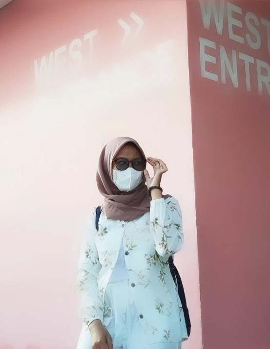

| Nama | : Salma Saniyyah |  |
| Tempat, Tgl lahir | : Depok, 21 September 2002 | |
| Jenis Kelamin | : Perempuan | |
| Agama | : Islam | |
| Status | : Mahasiswa | |
| Alamat | : Jl. Sa'rih Raya no.137, Rt.2 Rw.3, Cipayung-Depok | |
| No Telepon | : 089614622925 | |
| : salsaniy21@gmail.com |
| FORMAL: | |
| 2008 - 2014 | SD Negri Ragajaya |
| 2014-2017 | SMP Boarding School Binaul Ummah Kuningan |
| 2017-2018 | SMA Mawaddah (1 tahun) |
| 2021 | STT Terpadu Nurul Fikri |
| NON FORMAL: | |
| 2018-2020 | PTQ Griya Quran Depok (2 tahun) |
| 2020-2021 | PKBM Bina Insan Mandiri |
| Pengalaman Organisasi | Sertifikat Seminar |
| Anggota OSIS SMA Mawaddah Depok | Pelatihan Konten Marketing-Grow with Google program (2021) |
| Anggota BEST(Badan Eksekutif Santri Tahfidz) PTQ Griya Quran | Pelatihan Potoshop (2021) |